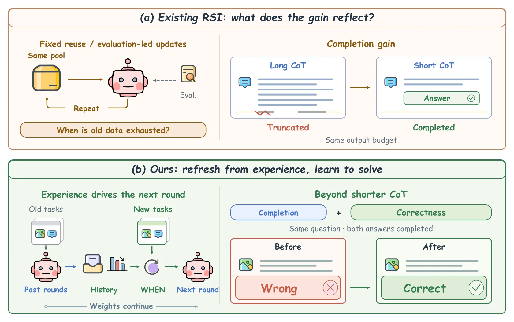
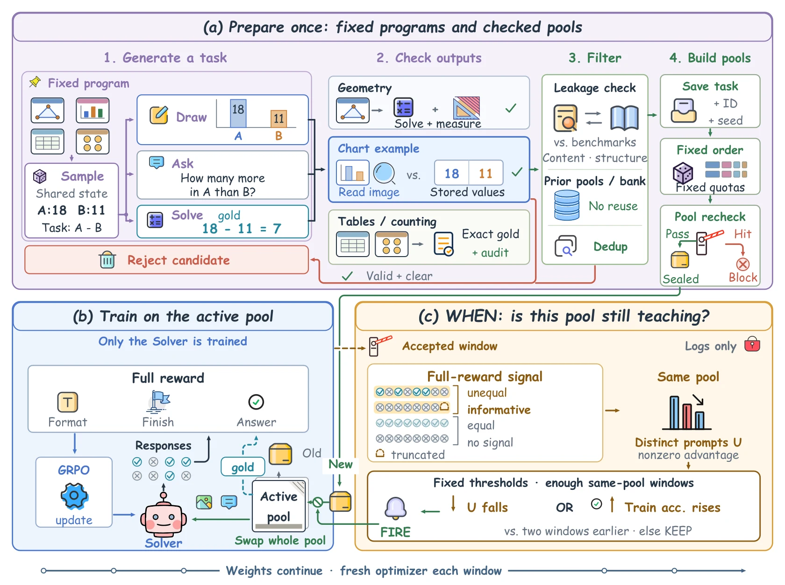

The loop, replayedQwen3-VL-8B · main trajectory · logged values from the paper
Training pool · the tasks GRPO samples from
Pool 1 · old · 500 tasks
—prompts still teaching (Uw)
geometrychartstablescountingfresh tasks: 0
Lit = Uw: distinct logged prompts whose 8 rollouts got different rewards. The count is from the paper; which cells are lit is illustrative.
Solver · GRPO, 100 updates per window
Ststart
57.77
Benchmark average (Macro11, 11 full test sets). Shown to you; the controller never sees it.
Is this pool still teaching?
Reads GRPO logs only
Training accuracy rise Δa—
Collecting the first three windows on this pool…
SourcesSt = 57.77 from the results text; S11–S32 from the Qwen benchmark table; U counts and Δa from the appendix controller table; pool mixes from the appendix.
57.77 → 61.05
Macro11 after eight continuation windows on Qwen3-VL-8B
+2.05
over continued training on the old pool at matched window 6 (60.40 vs 58.35)
800 vs 3,200
fresh tasks for 61.05, against 60.64 for refreshing every window (timing and selection both differ)
What this shows: once the training log says a pool is spent, random fresh tasks keep the loop climbing. What it does not show: that the log picks a better moment than a fixed schedule. Both executed refreshes came after three windows, where a three-window schedule would also refresh. One training run per policy.
Abstract
An RSI loop stalls first where its data runs out, and its gains can look larger than they are.
Recursive self-improvement requires models not only to acquire useful training experience, but also to decide when their current experience has ceased to be useful. Existing methods often focus on what experience to generate next, while paying less attention to when fresh experience should be introduced. Many also construct training targets through self-consistency or majority voting, making supervision depend on the model's own uncertain predictions.
We address these two questions separately: training dynamics determine when to acquire new experience, while the answers to new tasks remain independently checkable. A-RSI monitors reward variation and accuracy in training logs to refresh a task pool when its learning signal declines, without consulting validation or test scores. A static library of model-authored programs produces multimodal questions and derives their reference answers; we specify the task-generation contract, automatically verify chosen properties of the reward and refresh rules, and separately audit the generated answers. The training loop uses no external training examples or human-written answer labels. On the primary eleven-benchmark suite, A-RSI raises the performance average from 57.77 to 61.05 with 800 fresh tasks.
01 / Overview
Two questions. Two independent sources of truth.
A system can keep spending updates on a pool whose learning signal has declined, while refreshing too often consumes new tasks it may not need. And when training targets come from votes, the model's own errors become the labels for its next update. A-RSI separates the two decisions.
Question 1
When should fresh experience come in?
Prompts whose sampled responses receive different rewards are the ones that still produce a GRPO gradient. A-RSI counts them in its own training logs, together with logged accuracy, and refreshes the whole pool when that signal declines.
Answered by training dynamics, never by validation or test scores.
Question 2
What is the right answer to a new task?
The program that draws bars of 18 and 11 also computes \(a=18-11=7\). Image, question, and answer come from one sampled configuration, so the answer is computed, not voted, and an independent solver can recompute it.
Answered by programs, independently checkable.
1.1What the training log can see
GRPO scores eight rollouts of each prompt and learns from their differences. When all eight get the same reward, the advantage is zero and the prompt teaches nothing. Counting the prompts that still disagree tells the controller whether the pool is still teaching. Rewards below use \(r=r_{\mathrm{ans}}+0.1\,r_{\mathrm{fmt}}+0.3\,r_{\mathrm{stop}}\).
Why not ask the model? Models' predictions of which questions they would get wrong give AUC about 0.50 for four models, so state must be measured by running the model. This is why the detector uses the training log rather than a self-assessment.
1.2Pool reuse can stall learning; fewer truncations can raise accuracy

Motivation. (a) Pool reuse can stall learning, while fewer truncations can raise accuracy. (b) Training logs guide refresh, and response audits distinguish completion from error correction.
02 / Interactive demo
Play with the loop.
Two pieces of A-RSI, running in your browser.
Four small illustrative templates written to the paper's generation contract: sample parameters \(z\sim p_\tau\), build one configuration, and from it render the image, write the question, and compute the answer, \((I,q,a)=G_\tau(z)\). The learner only ever sees \((I,q)\). In the paper, fresh replacement tasks are drawn from a 16,000-task reservoir (14,482 eligible) built once by seven model-written, program-based generators; the 500-task initial pool comes from earlier generation batches.
What the learner sees · (I, q)—
Answer as the Solver:
Reward \(r=r_{\mathrm{ans}}+0.1\,r_{\mathrm{fmt}}+0.3\,r_{\mathrm{stop}}\); \(r_{\mathrm{stop}}=0\) only when decoding ends normally with a final boxed answer, otherwise \(-1\). A wrong answer can never outrank a right one: \(1-0.1-0.3>0\).
What the program knows · z, s(z), ahidden from the learner
Reference answer?
Admission checks—
This session's admitted pool (fresh = not seen before):
At the end of each window the controller compares the logged signal with its value two windows earlier, after at least three accepted windows on the same pool:
Templates, the candidate reservoir, and the replacement pools are fixed before training. Training experience changes the timing of data replacement; it does not update the generator or the task-sampling distribution. Only the Solver policy is optimized.

Overview of A-RSI. Task templates, the candidate reservoir, and replacement pools are fixed before training. The controller reads training logs to decide when to activate a fresh pool; only the Solver policy is optimized.
ConstructThe base model writes parameterized programs for geometry, charts, tables, and counting once. Executing them yields an image, a question, and a program-computed answer.\(z\sim p_\tau,\ (I,q,a)=G_\tau(z)\)
TrainThe Solver samples 8 responses per task and is updated with GRPO on correctness, format, and stopping rewards, 100 updates per window.\(r=r_{\mathrm{ans}}+0.1\,r_{\mathrm{fmt}}+0.3\,r_{\mathrm{stop}}\)
DetectAfter each accepted window the controller counts distinct prompts that still carry a nonzero advantage, and how often responses are correct.\(U_w,\ a_w\ \text{from}\ \mathcal{L}_w\)
RefreshWhen the rule fires, the whole pool is replaced by 400 unused tasks drawn in a fixed pseudorandom order under fixed family quotas (194 geometry, 131 chart, 54 table, 21 counting). Weights carry forward.\(\mathcal{P}_{w+1}=\operatorname{Draw}_{\mathbf{k}}(\mathcal{C}\setminus\mathcal{H}_w)\)
"Saturation" is this operational rule, not a measured plateau in held-out performance, and neither condition proves the pool has been mastered. The paper uses \(n_{\min}=3\), lag \(\ell=2\), \(\rho=0.85\), and \(\eta=10\) points, fixed across stages and models.
What counts as signal? Uw and aw
For the response groups \(\mathcal{G}_w\) logged after dynamic resampling, with logged advantages \(A_{g,j}\) and answer rewards \(c_{g,j}\):
Advantages use the full reward, so differences in formatting or stopping also count toward \(U_w\). Uniformly incorrect responses also remove within-group variation, so \(U_w\) describes the logged training signal, not an exhaustive estimate of what the pool could still teach.
Because \(n_{\min}>\ell\), the lagged comparison always stays within one pool. When neither condition holds, the controller keeps the pool and checks again after the next accepted window.
Isn't this DAPO's dynamic sampling?
DAPO removes prompts whose sampled responses all receive the same outcome, since they yield no within-group policy gradient. A-RSI uses the related signal for a different decision: \(U_w\) aggregates informative prompts across a window and helps decide whether the entire pool should be refreshed. It is a pool-level diagnostic, not a replacement for batch-level sampling.
What if no fresh pool remains?
If a refresh is requested but the declared replacement pools are exhausted, the controller refuses to start the next window. It does not silently reuse a pool or change the sampling rule. A failed window is retried once from the preceding accepted checkpoint; a second failure stops the run.
Algorithm 1 · the training loop
# Algorithm 1 · A-RSI: pool refresh from training logsinput θ₀ = S_t, initial pool P₁, ordered disjoint replacement pools drawn from C under quotas k, budget W
n ← 0 ; H ← P₁
for w = 1 … W:
fresh optimizer + scheduler; train H GRPO steps from θ_{w−1} on P_w → θ_w, log L_w
if health gate fails: retry once from θ_{w−1}, same pool and seed; halt if the retry fails
n ← n + 1 ; compute U_w, a_w from L_w
δ_w ← trigger(n, U, a) # reads training logs onlyif w = W: return θ_w
if δ_w = 1 and no declared pool remains: halt, return θ_w # never silently reuseif δ_w = 1: P_{w+1} ← next unused pool ; H ← H ∪ P_{w+1} ; n ← 0
else: P_{w+1} ← P_w
Glossary
window
100 GRPO updates: 50 generation batches of 8 prompts with 8 rollouts each, 3,200 responses.
pool
The task set GRPO samples from. Pool 1 is the old pool of 500 tasks (204 geometry, 296 chart); each refresh brings 400 unused tasks.
refresh
Replace the whole pool; keep the weights; every window starts a fresh optimizer and scheduler.
Uw
Distinct logged prompts whose rollouts received different total rewards (nonzero advantage), counted after dynamic resampling.
aw
Share of logged rollouts with a correct answer.
S0, St, Sij
The public model; S0 after 100 GRPO updates on the old pool (Qwen only); the model after the j-th window on the i-th pool.
Macro11
Equal-weight average of 11 full test sets at an 8,192-token limit.
MM-Zero v5
Released weights of a prior zero-data multimodal method whose training labels come from majority vote.
offline replay
A final-stage decision computed after S33, not executed during training.
04 / Results
Refresh, or stall.
Starting from St at 57.77, A-RSI reaches 59.84, 60.40, and 61.05 at continuation windows 4, 6, and 8. Original-pool continuation scores 58.48 and 58.35, then halts. The refreshing arms continue learning beyond this plateau.
Qwen3-VL-8B · eleven full benchmarks · 8,192 tokens
4.1A spent pool stalls; fresh pools keep climbing
+2.05vs continued reuse at window 6 (60.40 vs 58.35)
Five refresh policies, aligned by training updates. Hover the chart for exact scores, click a legend entry to hide or show a policy.
One training run per policy. Replacement also shrinks the active pool from 500 to 400 tasks, so +2.05 is evidence for the combined policy, not for freshness alone.
What the log saw · same thresholds for every pool and model
4.2One rule, different decisions
83.98% vs 98.68%signal kept on the third pool: Qwen refresh, MiMo keep
Operational rule, not proof of mastery. Third-pool actions are offline replays, not executed. This shows the rule reacting to each model's log; it does not show that it picks a better time than a schedule. Try other thresholds in Demo 02 →
Timing question
4.3Is the detector's timing better than a schedule?
Not shownthe paper leaves this open
With frontier selection held fixed, detector-triggered refresh scores 59.59 against 59.89 for refreshing every two windows (−0.30). Both executed Qwen refreshes came after three windows, as a fixed three-window schedule would. The first refresh point was set using existing logs. The results support the implemented fresh-pool policy in this run, without establishing that the detector selects a better time than a fixed schedule.
Isn't this just refreshing every three windows?
In the executed Qwen run, yes: both refreshes coincided with a three-window schedule. The rule departs from a schedule only in the offline final-stage replay, where Qwen keeps 83.98% of its signal and would refresh, while MiMo keeps 98.68% and would keep; a fixed schedule would replace both. A fixed-schedule random control is the paper's stated next step.
Replacement selection · Macro11 at 8,192 tokens
4.4No selector we tried beat a random draw
8 / 8below the matched random control (−0.05 to −2.63)
The simple version of the loop wins: the log says when, random fresh tasks say what. Single-run point estimates; variants share control runs and training histories, so they are not independent replications. The finding is limited to these generators, this model, and these selection rules.
A likely reason · supported by logs, not isolated by ablations
A random pool keeps the tasks the model cannot finish. That is where the stopping reward teaches most: 21.9% of training answers were truncated in a random pool, 17% in selected pools. At window 8, benchmark truncation is 4.16% for A-RSI and 8.14% for Frontier.
Selection changes the answer types. The failure-prioritized pool had no multiple-choice tasks; every-window random refresh had 222 and learnable-band sampling 227.
Random pools did not saturate within 4–8 windows. Under every-window random refresh, tasks with training signal per window were 209, 180, 189, and 183, flat after window 2.
For scale: two runs whose first two pool files hash identically scored 58.14 and 59.60 at window 2 (difference 1.46). Each arm was trained once.
Per benchmark · St → S32
4.5Every benchmark improves from St to S32
11 / 11from +1.19 (SCEMQA-MC) to +8.33 (PhyX)
Qwen3-VL-8B. Points: S0, St, then nine continuation windows; shaded bands are the three pools, the orange dot is S32.
Show the per-benchmark table
Where the gains land: visual types at S32
Geometry and counting show the largest gains over St, alongside large drops in truncation. Grey ticks are the other refreshing arms; on chart and table accuracy, and on chart truncation, another arm is ahead.
05 / Analysis
Is the gain real? We audited our own pipeline.
A score can rise because more answers finish within the output budget or because already completed answers are corrected. Higher reward is not the same as better reasoning. These checks keep the two apart.
Length-budget protocol · fixed weights, each compared with the base at the same limit
5.1Part of a zero-data gain is learning to finish
80% vs 59%of the 4,096-token gain kept at 8,192
Zero-data self-improvement results should report, at a minimum, the base model at the same relaxed limit, the truncation rate of every model, and the gain at two or more limits. A gain that falls sharply with the limit is partly a gain in finishing.
5.2Checks on data, rewards, and our own checker
1,000 / 1,000
Generated answers agree with independent solvers
200 consumed tasks from each of five generator groups, sampled before recomputing anything. Gold values and image hashes also match the source records.
3 checks · 1,000 / 1,000 each
Correctness always outranks; finishing still pays
A correct committed answer ranks above an incorrect one. With correctness held fixed, canonical formatting and normal termination each raise reward, so committing a wrong answer can raise reward without improving correctness.
4,000 / 4,000
Injected defects detected
Corrupted references, image bytes, source questions, and truncated images are all caught by the audit checks.
220 / 16,000
A checker weakness, reported
On 110 choice questions the production checker accepts a gold-prefixed ambiguous answer and a gold option followed by unrelated text. A stricter candidate passes all 16,000 checks; on 3,760 logged choice responses it changes one score.
800 images
Reproduced byte for byte
Replaying the frozen generators reproduces 800 whole images exactly; the remaining 200 charts match in plot pixels and labels but differ in fonts.
5 / 1,927
Label ambiguities, kept on record
The multi-series chart audit finds five ties for "third highest". They are retained as observed defects, so the pipeline is not described as guaranteeing zero label ambiguity.
5.3What the evidence does and does not support
06 / Case study
Finishing is not the same as correcting.
Two observable changes, reported separately: a response that used to hit the token limit now finishes, or a response that finished with a wrong answer now finishes with the right one. First the full-suite accounting, then selected examples.
All 22,042 questions · 8,192 tokens · format-corrected scoring
6.1Where the Macro11 gain comes from
6.2Selected examples
2 selected
FinishingThe base runs into the 8,192-token limit with no final answer; S32 commits and stops. Shorter, completed responses can raise accuracy even when the reasoning stays flawed.
12 selected
CorrectingBoth responses finish normally; the base is wrong and S32 is right in two independent decodings. Net positive for MiMo across the full suite; individual items for Qwen.
Selected favorable examples, not frequency estimates. Image regions are marked by us from the paper's description of each response.
07 / Citation
Citation
Preprint · 2026
@article{liu2026arsi,
title = {{A-RSI}: Adaptive Task Refresh for Zero-Data Multimodal Self-Improvement},
author = {Liu, Yu and Li, Youxing and Tan, Yuedong and Yang, Zhiwei and Su, Zihan and
Feng, Hanqi and Zhang, Shaojie and Liao, Libin and Wan, Zihao and Wu, Chenxu and
Cao, Cong and Yuan, Fangfang and Liu, Yanbing and Chen, Ziheng and Fu, Pei and
Timofte, Radu and Wu, Zongwei and Sebe, Nicu and Poczos, Barnabas and Luan, Jian},
year = {2026},
note = {Preprint}
}